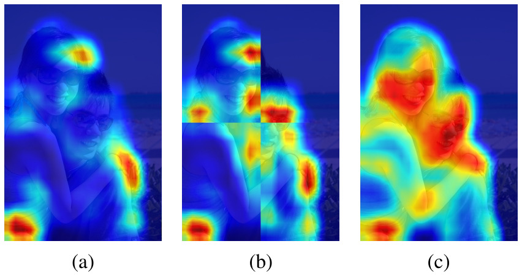
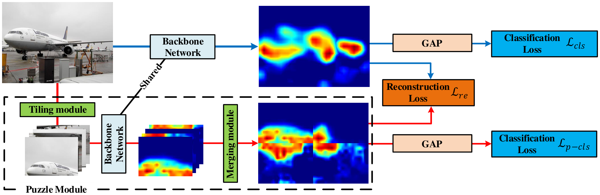
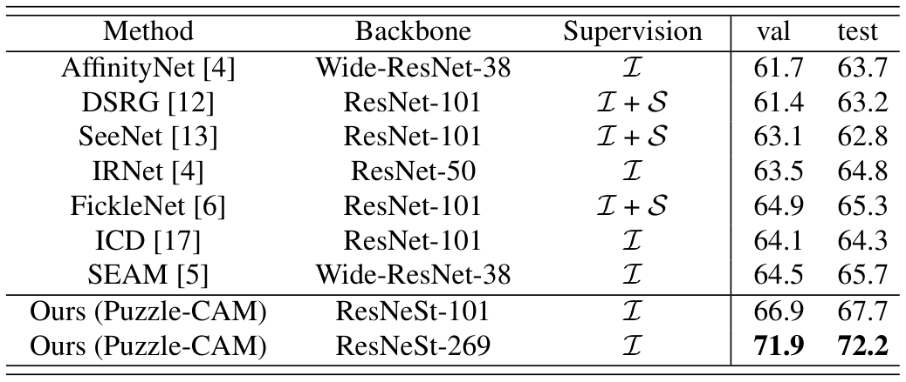
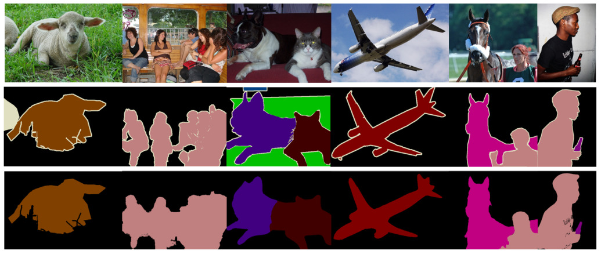
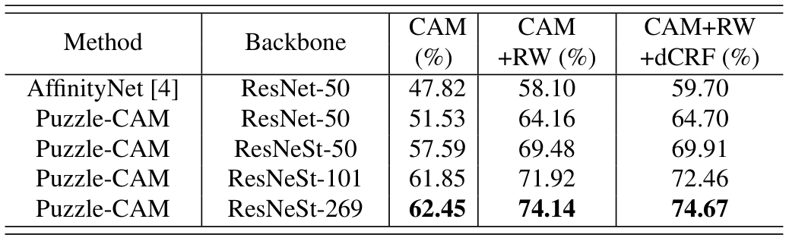
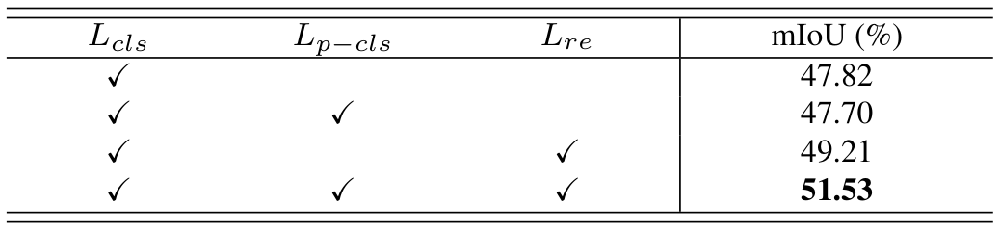
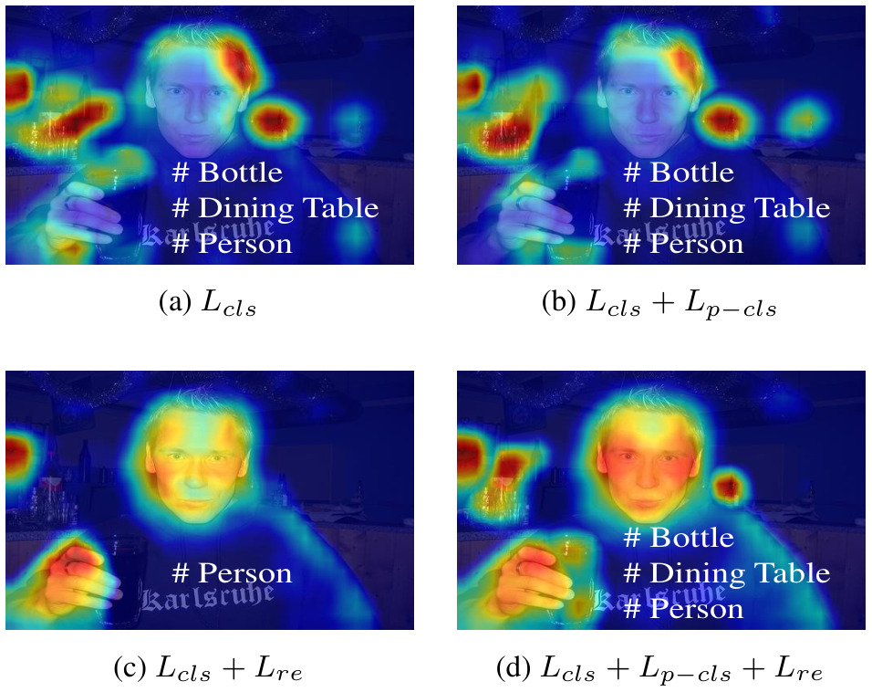

CAMs generated from tiled and original images. (a) Conventional CAMs from the original image, (b) CAMs generated from the tiled images, and (c) CAMs predicted by the proposed Puzzle-CAM.
The CAM of an image classifier focuses on the most discriminative parts of an object, and the CAMs of isolated patches in a tiled image are significantly inconsistent with the CAM of the original image. Puzzle-CAM uses this difference as self-supervision: a puzzle module splits the image and merges the CAMs of its patches, and a reconstructing regularization matches the merged CAM with the CAM of the whole image, so the CAM covers the overall region of an object with image-level supervision and no extra parameters.
Weakly-supervised semantic segmentation (WSSS) is introduced to narrow the gap for semantic segmentation performance from pixel-level supervision to image-level supervision. Most advanced approaches are based on class activation maps (CAMs) to generate pseudo-labels to train the segmentation network. The main limitation of WSSS is that the process of generating pseudo-labels from CAMs that use an image classifier is mainly focused on the most discriminative parts of the objects.
To address this issue, we propose Puzzle-CAM, a process that minimizes differences between the features from separate patches and the whole image. Our method consists of a puzzle module and two regularization terms to discover the most integrated region in an object. Puzzle-CAM can activate the overall region of an object using image-level supervision without requiring extra parameters.
In experiments, Puzzle-CAM outperformed previous state-of-the-art methods using the same labels for supervision on the PASCAL VOC 2012 dataset. Code associated with our experiments is available at https://github.com/OFRIN/PuzzleCAM.
CAMs usually focus on small parts of the semantic objects, and the CAMs generated from isolated patches of a tiled image differ from those of the original image, which enlarges the supervision gap between fully- and weakly-supervised semantic segmentation.
Puzzle-CAM incorporates reconstructing regularization with a puzzle module that splits the image and merges the CAMs of its patches, to effectively enhance the quality of CAMs without adding layers.
Puzzle-CAM outperformed existing state-of-the-art methods with the same level of supervision on the PASCAL VOC 2012 dataset, reaching 71.9% mIoU on the val set and 72.2% on the test set.
Puzzle-CAM is a Siamese network with a shared backbone: one branch takes the original image, the other takes its tiled patches, and the loss functions match the CAMs generated from the tiled image with those of the original image.

The overall architecture of Puzzle-CAM. The puzzle module tiles the image, generates the CAMs of the patches with the shared backbone, and merges them. The reconstruction loss matches the merged CAM with the CAM of the original image, and both CAMs pass through global average pooling (GAP) for classification.
From an input image I of size W × H, the tiling module generates four non-overlapping patches of size W/2 × H/2, and CAMs are generated for each patch. The merging module then attaches them into a single set of CAMs Are that has the same shape as As, the CAMs of I.
A GAP layer converts the CAMs of the original and the tiled images into prediction vectors, and a multi-label soft margin loss is applied to each: Lcls for the original image and Lp−cls for the reconstructed one. The two classification losses roughly estimate the region of the object.
The reconstruction loss Lre is the L1 distance between As and Are. It reinforces the CAMs from the original image and narrows the gap between pixel-level and image-level supervision. The final loss is L = Lcls + Lp−cls + αLre, where α is linearly ramped up to its maximum of 4. During inference, the classifier is used without the puzzle module.
Puzzle-CAM is evaluated on the PASCAL VOC 2012 dataset. AffinityNet is trained on the CAMs of Puzzle-CAM to synthesize pseudo-labels, which then train a DeepLabv3+ segmentation model in full supervision mode.

Comparison on the PASCAL VOC 2012 val and test sets (mIoU). Puzzle-CAM reaches 66.9 on val and 67.7 on test with ResNeSt-101, and 71.9 and 72.2 with ResNeSt-269, using image-level labels only. I: image-level labels. S: external saliency models.

Qualitative segmentation results on the PASCAL VOC 2012 val set. Top: original images. Middle: ground truth. Bottom: prediction of the segmentation model trained using the pseudo-labels from Puzzle-CAM. The proposed method worked well on both large and small objects.

Quality of the pseudo semantic segmentation labels in mIoU on the PASCAL VOC 2012 training set. With the same ResNet-50 backbone, Puzzle-CAM improves the CAMs of the AffinityNet baseline from 47.82% to 51.53%, and with ResNeSt-269 the final pseudo-labels reach 74.67%. RW: random walk with AffinityNet. dCRF: dense conditional random field.

Ablation of the Puzzle-CAM loss functions with ResNet-50 as the backbone. The reconstructing regularization Lre boosts the baseline from 47.82% to 49.21% mIoU, while the classification loss from the tiled patches Lp−cls alone is similar to the baseline. Using both improves the baseline by 3.71, to 51.53%.

Prediction tags and CAMs by combinations of loss functions. With only Lre added in (c), localization improves for some classes but several classes are no longer predicted. With all losses in (d), the final CAMs not only suppress over-activation but also expand into complete object activation coverage.
@inproceedings{jo2021puzzlecam,
title = {Puzzle-CAM: Improved localization via matching partial and full features},
author = {Jo, Sanghyun and Yu, In-Jae},
booktitle = {2021 IEEE International Conference on Image Processing (ICIP)},
year = {2021},
pages = {639-643},
doi = {10.1109/ICIP42928.2021.9506058}
}